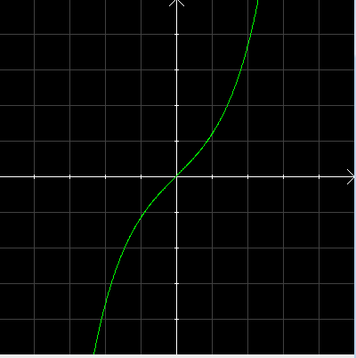
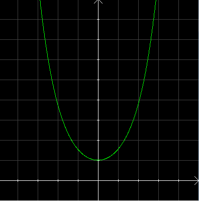
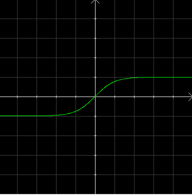
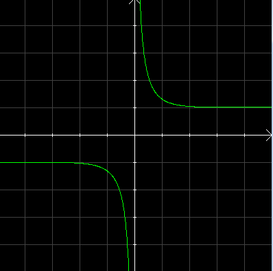

| Choisissez votre langue ! | Choose your language ! |
Nous donnons tout d'abord les définitions de ces fonctions liées à l'exponentielle.
Nous listons ensuite leurs propriétés, sans démonstrations. Les preuves ne présentent aucune difficulté et sont de simples vérifications.
Nous observerons une grande similitude au niveau des formules (dérivation, formules d'addition de duplication) avec les fonctions trigonométriques, d'où leurs noms.
Le qualificatif d'hyperbolique est lié au fait que si t → (a×cos(t),b×sin(t)) est un paramétrage classique de l'ellipse d'équation
We first give the definitions of these functions related to the exponential.
We then list their properties, without proofs. The proofs do not present any difficulty and are simple verifications.
We will observe a great similarity at the level of the formulas (derivation, duplication addition formulas) with the trigonometric functions, hence their names.
The qualifier of hyperbolic is linked to the fact that if t → (a×cos(t),b×sin(t)) is a classical parameterization of the equation ellipse
\( \displaystyle \frac{x^{2}}{a^{2}}+\frac{y^{2}}{b^{2}}=1 \)
\( \displaystyle \frac{x^{2}}{a^{2}}-\frac{y^{2}}{b^{2}}=1 \)
Définitions
Sinus hyperbolique
Definitions
Hyperbolic sine
\( \displaystyle sinh(x)=\frac{e^{x}-e^{-x}}{2} \)
Nous définissons ainsi une fonction de ℝ sur ℝ appelée 'sinus hyperbolique' .\( \displaystyle sinh(x)=\frac{e^{x}-e^{-x}}{2} \)
We thus define a function of ℝ onto ℝ called 'hyperbolic sine' .
Cosinus hyperbolique
Hyperbolic cosine
\( \displaystyle cosh(x)=\frac{e^{x}+e^{-x}}{2} \)
Nous définissons ainsi une fonction de ℝ sur 1,+∞[ appelée 'cosinus hyperbolique' .\( \displaystyle cosh(x)=\frac{e^{x}+e^{-x}}{2} \)
We thus define a function of ℝ onto [1,+∞[ called 'hyperbolic cosine' .
Tangente hyperbolique
Hyperbolic tangent
\( \displaystyle tanh(x)=\frac{sinh(x)}{cosh(x)} \)
Nous définissons ainsi une fonction de ℝ sur ]-1,+1[ appelée 'tangente hyperbolique' .\( \displaystyle tanh(x)=\frac{sinh(x)}{cosh(x)} \)
We thus define a function of ℝ onto ]-1,+1[ called 'hyperbolic tangent' .
Cotangente hyperbolique
Hyperbolic cotangent
\( \displaystyle cotanh(x)=\frac{cosh(x)}{sinh(x)} \)
Nous définissons ainsi une fonction de ℝ-{0} sur ]-∞,-1[ ∪ ]1,+∞[ appelée 'cotangente hyperbolique' .\( \displaystyle cotanh(x)=\frac{cosh(x)}{sinh(x)} \)
We thus define a function from ℝ-{0} onto ]-∞,-1[ ∪ ]1,+∞[ called 'hyperbolic cotangent' .
Dérivation
Il résulte de la définition même des fonctions hyperboliques que ce sont des fonctions continues et indéfiniment dérivables sur leurs domaines comme quotient de sommes de fonctions indéfiniment dérivables. On a les formules suivantes (à comparer avec les fonctions trigonométriques) :Differentiation
It follows from the very definition of hyperbolic functions that they are continuous and indefinitely differentiable functions over their domains as a quotient of sums of indefinitely differentiable functions. We have the following formulas (to be compared with the trigonometric functions):- sinh'=cosh
- cosh'=sinh
- tanh'=1/cosh2=1-tanh2
- cotanh'=-1/sinh2=1-cotanh2
- sinh'=cosh
- cosh'=sinh
- tanh'=1/cosh2=1-tanh2
- cotanh'=-1/sinh2=1-cotanh2
Développement en séries entières
On les obtient pour sinh et cosh à partir du développement de l'exponentielle.Expansions into power series
They are obtained for sinh and cosh from the expansion of the exponential.\( \displaystyle sinh(x)=\sum_{n=0}^{\infty}\frac{x^{2n+1}}{(2n+1)!} \)
\( \displaystyle cosh(x)=\sum_{n=0}^{\infty}\frac{x^{2n}}{(2n)!} \)
\( \displaystyle sinh(x)=\sum_{n=0}^{\infty}\frac{x^{2n+1}}{(2n+1)!} \)
\( \displaystyle cosh(x)=\sum_{n=0}^{\infty}\frac{x^{2n}}{(2n)!} \)
Formules usuelles
Voici quelques équations satisfaites par les fonctions hyperboliques. On remarquera la similitude (souvent à un signe près) avec les fonctions trigonométriques.Usual formulas
Here are some equations satisfied by the hyperbolic functions. Note the similarity (often up to a sign) with trigonometric functions.cosh(x+y)=cosh(x)cosh(y)+sinh(x)sinh(y)
cosh(x+y)=cosh(x)cosh(y)+sinh(x)sinh(y)
\( \displaystyle cosh(\frac{x}{2})=\sqrt{\frac{cosh(x)+1}{2}} \)
et\( \displaystyle sinh(\frac{x}{2})=\sqrt{\frac{cosh(x)-1}{2}}~~si~~x\geqslant 0 \)
\( \displaystyle cosh(\frac{x}{2})=\sqrt{\frac{cosh(x)+1}{2}} \)
and\( \displaystyle sinh(\frac{x}{2})=\sqrt{\frac{cosh(x)-1}{2}}~~if~~x\geqslant 0 \)
\( \displaystyle tanh^{2}(x)=1-\frac{1}{cosh^{2}(x)} \)
\( \displaystyle tanh(x+y)=\frac{tanh(x)-tanh(y)}{1+tanh(x)tanh(y)} \)
\( \displaystyle tanh\left ( \frac{x}{2} \right )=\sqrt{\frac{cosh(x)-1}{cosh(x)+1}} \)
\( \displaystyle tanh^{2}(x)=1-\frac{1}{cosh^{2}(x)} \)
\( \displaystyle tanh(x+y)=\frac{tanh(x)-tanh(y)}{1+tanh(x)tanh(y)} \)
\( \displaystyle tanh\left ( \frac{x}{2} \right )=\sqrt{\frac{cosh(x)-1}{cosh(x)+1}} \)
|
Création Gilles Dubois
Created by Gilles Dubois
|
Janvier 2022
January 2022
|
Version mobile Jquery
Mobile Jquery version
|
|